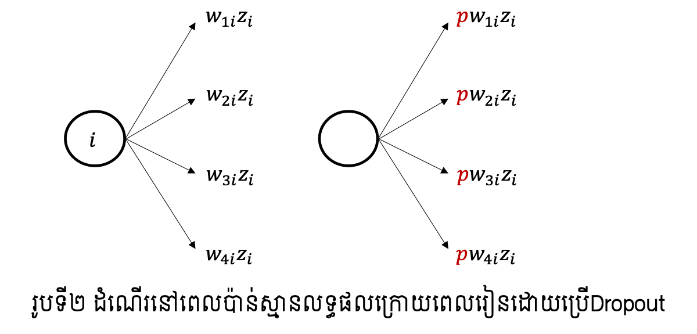
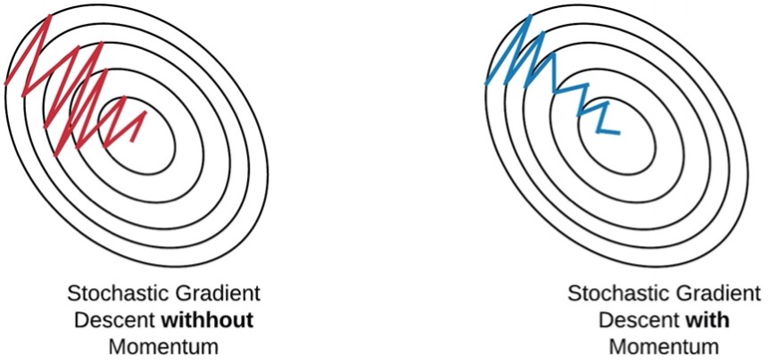

Technique in Learning Process¶
យើងបានសិក្សារួចមកហើយអំពីវិធីក្នុងការកំណត់តម្លៃប៉ារ៉ាម៉ែត្រនៃNeural Networkនៅក្នុងដំណើរការរៀន ដូចជាវិធីstochastic gradient descent និង វិធីក្នុងការគណនាដេរីវេដោយផ្នែកប្រកបដោយប្រសិទ្ធភាពដូចជា backpropagation។ ក្នុងអត្ថបទនេះយើងនឹងលើកយកល្បិចនិងវិធីសាស្រ្តមួយចំនួនដែលត្រូវបានប្រើដើម្បីបង្កើនប្រសិទ្ធភាពនៃការរៀនក្នុងNeural Network។ ប្រសិទ្ធភាពនៃការរៀននៅទីនេះសំដៅដល់ភាពល្អនៃអត្រាត្រឹមត្រូវក្នុងការប៉ាន់ស្មានលទ្ធផលរបស់បណ្តាញស្មុគស្មាញដូចជាFNNច្រើនថ្នាក់ដែលហៅថា Deep Learning ព្រមទាំងល្បឿននៃការរៀនរបស់វា។
ការកាត់បន្ថយស្ថានភាពរៀនហួសកម្រិត(Overfitting)¶
ការដាក់កម្រិតលើទម្ងន់ផ្ទាល់នៃណឺរ៉ូន(weight decay)¶
បញ្ហារៀនហួសកម្រិតគឺជាស្ថានភាពដែលបណ្តាញអាចផ្តល់លទ្ធផលល្អតែចំពោះទិន្នន័យ សម្រាប់រៀនប៉ុន្តែ មិនអាចផ្តល់ចម្លើយល្អប្រសើរចំពោះទិន្នន័យផ្សេងពីទិន្នន័យសម្រាប់រៀនឡើយ។ស្ថានភាពនេះអាចបកស្រាយបានថាជាករណីដែលការធ្វើបរមាកម្មលើអនុគមន៍កម្រិតលម្អៀងបានធ្លាក់ចូលទៅចំណុចនៃអប្បបរមាធៀបដែលមិនមែនជាចំណុចអប្បបរមានៃដែនកំណត់ទាំងមូល។បញ្ហានេះកាន់តែងាយកើតឡើងនៅពេលដែលកម្រិតសេរីភាពនៃបណ្តាញពិសេសចំនួននៃប៉ារ៉ាម៉ែត្រមានកាន់តែច្រើន។ ដោយសារតែកម្រិតសេរីភាពនៃបណ្តាញមួយបង្ហាញពីកម្រិតនៃសមត្ថភាពរបស់បណ្តាញ ដូច្នេះការកាត់បន្ថយកម្រិតសេរីភាពដើម្បីដោះស្រាយស្ថានភាពរៀនហួសកម្រិតមិនមែនជារឿងល្អឡើយបើពិនិត្យលើសមត្ថភាពទាំងមូលរបស់បណ្តាញ។ ហេតុនេះដើម្បកាត់បន្ថយការកើតឡើងនៃស្ថានភាពរៀនហួសកំរិតនិងរក្សានូវសមត្ថភាពខ្ពស់របស់បណ្តាញផង ការគ្រប់គ្រងទៅលើកម្រិតសេរីនៃទម្ងន់ផ្ទាល់របស់ណឺរ៉ូនត្រូវបានសិក្សាព្រមគ្នានៅពេលដំណើរការការរៀន។វិធីនេះហៅថាRegularization។ វិធីសាស្រ្តងាយមួយនៃRegularizationប្រើចំពោះNeural Networkគឺការដាក់កម្រិតលើទម្ងន់ផ្ទាល់នៃណឺរ៉ូន(weight decay)។
ការដាក់កម្រិតលើទម្ងន់ផ្ទាល់នៃណឺរ៉ូនអាចធ្វើបានដូចខាងក្រោម។
នៅទីនេះ \(\lambda \) ជាប៉ារ៉ាម៉ែត្រដើម្បីគ្រប់គ្រងកម្រិតនៃការដាក់កម្រិតលក្ខខណ្ឌលើទំហំនៃប៉ារ៉ាម៉ែត្រទម្ងន់ផ្ទាល់នៃណឺរ៉ូន \(\pmb{w}\)។ ជាទូទៅតម្លៃនេះត្រូវបានកំណត់ដោយចំនួនពិតតូចខ្លាំង\(\lambda=0.1〜 0.00001\)។ ក្នុងករណីនេះការផ្លាស់ប្តូរតម្លៃប៉ារ៉ាម៉ែត្រតាម SGD ត្រូវបានធ្វើឡើងដូចខាងក្រោម។
តាមកន្សោមខាងលើនេះ យើងអាចមើលឃើញថាតម្លៃនៃ ប៉ារ៉ម៉ែត្រនឹងត្រូវបានបន្ថយជានិច្ចរាល់ពេលនៃការផ្លាស់ប្តូរតម្លៃប៉ារ៉ាម៉ែត្រនៃដំណើរការរៀនត្រូវបានធ្វើឡើង។ ហេតុនេះហើយទើបវិធីនេះហៅថា weight decay ។ ក្រៅពីវិធីខាងលើនេះក៏មានវិធីផ្សេងដែរដូចជាការកំណត់លក្ខខណ្ឌអតិបរមានៃទំហំប៉ារ៉ាម៉ែត្រទៅក្នុងចំណោទអប្បបរមានៃអនុគមន៍កម្រិតលម្អៀងដោយទម្រង់ខាងក្រោម។
Dropout¶
Dropout គឺជាវិធីសាស្រ្តរៀនដែលណឺរ៉ូនត្រូវប្រើត្រូវបានជ្រើសដោយចៃដន្យជាមួយតម្លៃប្រូ បាបដែលបានកំណត់។ រូបទី១បង្ហាញពីទម្រង់នៃFNNនៅពេលដែលណឺរ៉ូនមួយចំនួនត្រូវបានជ្រើសដើម្បីរៀន។ នៅពេលរៀន(learning process) ណឺរ៉ូននៃថ្នាក់ធាតុចូលនិងថ្នាក់កណ្តាលត្រូវបានជ្រើសរើសដោយប្រូបាប \(p\) ដោយចៃដន្យ ឯណឺរ៉ូនក្រៅពីនេះត្រូវបានចាត់ទុកថាគ្មាន រួចដំណើរការរៀនដូចធម្មតា។ ប្រូបាប \(p\) អាចកំនត់ដោយតម្លៃផ្សេងគ្នានៅតាមថ្នាក់និមួយៗបាន។
ក្រោយពេលដំណើរការរៀនបានបញ្ចប់ ការប៉ាន់ស្មានលទ្ធផលត្រូវបានធ្វើជាមួយនឹងណឺរ៉ូនទាំងអស់ដោយគ្មានការជ្រើសរើសតែមួយផ្នែកដូចកាលដំណាក់កាលរៀនឡើយ។ ប៉ុន្តែនៅករណីនេះតម្លៃនៃលទ្ធផលនៅថ្នាក់និមួយៗត្រូវបានគុណនឹងតម្លៃប្រូបាបដែលបានកំណត់កាលពីពេលរៀន។

បំណងនៃការអនុវត្តDropoutគឺកាត់បន្ថយកម្រិតសេរីភាពនៃបណ្តាញនៅពេលដំណើរការរៀនឱ្យតូចដើម្បីកាត់បន្ថយឱកាសនៃការកើតឡើងនូវស្ថានភាពរៀនហួសកម្រិត(overfitting)។ ការធ្វើបែបនេះសមមូលនឹងការរៀនដោយប្រើបណ្តាញច្រើនដែលឯករាជពីគ្នានិងដែលត្រូវបានកាត់បន្ថយចំនួនណឺរ៉ូន រួចធ្វើមធ្យមភាគលើលទ្ធផលនៅដំណាក់កាលប៉ាន់ស្មានលទ្ធផល។
វិធីសាស្រ្តជំនួយក្នុងការរៀន¶
ការផ្តល់ទម្រង់ស្តង់ដាលើទិន្នន័យ(standardization of data)¶
ក្នុងករណីដែលទិន្នន័យសម្រាប់រៀន(training data)មានស្ថានភាពលំអៀងទៅកាន់ក្រុម តម្លៃណាមួយ ការរៀននិងប៉ាន់ស្មានលទ្ធផលនឹងបានល្អប្រសើរឡើយ។ ដើម្បីដោះស្រាយបញ្ហាបែបនេះការធ្វើដំណើរការដំណាក់កាលដំបូង(preprocessing)លើសំណុំទិន្នន័យមុនពេលអនុវត្តដំណើរការរៀនត្រូវបានធ្វើឡើង។ ដំណើរការដំណាក់កាលដំបូងសាមញ្ញមួយគឺការធ្វើឱ្យទិន្នន័យទៅជាទម្រង់ស្តង់ដាដែលហៅថា standardization។ ដំណើរការនេះត្រូវធ្វើឡើងដោយការបម្លែងទិន្នន័យនិមួយៗតាមទម្រង់ខាងក្រោម។ នៅទីនេះ \(\pmb{x}_{ni} \) គឺជាកំប៉ូសង់ទីiនៃទិន្នន័យ\(\pmb{x}_n\) និង \({\bar{x}}_i=\frac{1}{N}\sum_{n=1}^{N}x_{ni}\) ។
ការអនុវត្តបែបនេះជាការបន្លែងទូទៅនៅក្នុងវិធីសាស្រ្តស្ថិតិដែលក្រោយបម្លែងរួចទិន្នន័យនឹងមានតម្លៃមធ្យមនៃកំប៉ូសង់និមួយៗស្មើ0 និងវ៉ារ្យង់ស្មើ1។
របៀបកំណត់កម្រិតរៀន(learning rate)¶
នៅក្នុងវិធីសាស្រ្តរៀនដូចជា gradient descend ឬ stochastic gradient descend (SGD) ការផ្លាស់ប្តូរនិងកំណត់តម្លៃនៃប៉ារ៉ាម៉ែត្រប្រែប្រួលទៅតាមតម្លៃកម្រិតរៀន(learning rate)ដែលបានកំណត់។ នៅក្នុងដំណើរការរៀនមានវិធីសាស្រ្តចំបង២ដែលត្រូវបានប្រើដើម្បីកំណត់តម្លៃកម្រិតរៀន។
វិធីសាស្រ្តទី១ គឺការកំណត់តម្លៃកម្រិតរៀនឱ្យធំនៅពេលចាប់ផ្តើមរៀន រួចបន្ថយតម្លៃនេះបន្តិចម្តងៗនៅពេលដំណើរការរៀនបន្ត។ ជាឧទាហរណ៍ការកំណត់កម្រិតរៀននៅដំណាក់កាលរៀនទី\(t\) ដោយ
ដែល\(\eta_0\)ជាតម្លៃកម្រិតរៀននៅពេលចាប់ផ្តើមនិង\(\alpha\)កម្រិតនៃការបន្ថយ។
វិធីសាស្រ្តទី២ គឺការកំណត់តម្លៃកម្រិតរៀនខុសៗគ្នានៅតាមថ្នាក់ផ្សេងៗគ្នានៃបណ្តាញ។ របៀបនៃការកំណត់អាចប្រែប្រួលទៅតាមទម្រង់នៃបណ្តាញ។ ជាឧទាហរណ៍ការកំណត់កម្រិតរៀនឱ្យធំនៅថ្នាក់ដែលក្បែរនឹងថ្នាក់ធាតុចូល(input layer) និងកំណត់តម្លៃកាន់តែតូចនៅថ្នាក់ដែលនៅក្បែរថ្នាក់លទ្ធផលចុងក្រោយ(output layer)។
វិធីសាស្រ្តនៃការកំណត់តម្លៃកម្រិតរៀនដោយស្វ័យប្រវត្តិដូចជា AdaGrad ក៏ត្រូវបានប្រើជាញឹកញាប់ផងដែរ។ ឧបមាថា gradient នៃអនុគមន៍កម្រិតលម្អៀងកំណត់ដោយ \(\pmb{g}_t=\mathbf{\nabla}E_n\) និងកំប៉ូសង់ទី\(i\) កំណត់ដោយ \(g_{t,i}\)។ បើតាម SGD ប៉ារ៉ាម៉ែត្រនឹងត្រូវផ្លាស់ប្តូរតម្លៃដោយ \(-\eta g_{t,i}\) ប៉ុន្តែ AdaGrad វាផ្លាស់ប្តូរដោយតម្លៃខាងក្រោម។ ការផ្លាស់ប្តូរបែបនេះអាចបកស្រាយដោយងាយថាជាការផ្តោតការយកចិត្តទុកដាក់លើតម្លៃកំប៉ូសង់ណាដែលការផ្លាស់ប្តូរមិនសូវបានអនុវត្តជាញឹកញាប់។
វិធីសាស្រ្ត Momentum¶
វិធីសាស្រ្តនៃការកំណត់តម្លៃកម្រិតរៀនដោយស្វ័យប្រវត្តិផ្សេងទៀតដែលមានប្រសិទ្ធភាពគឺ វិធីសាស្រ្ត Momentum។ វិធីនេះត្រូវបានដឹងថាជួយឱ្យដំណើរការផ្លាស់ប្តូរតម្លៃប៉ារ៉ាម៉ែត្រក្នុង gradient descend ឆាប់ចប់។ ក្នុងវិធីសាស្រ្តនេះប៉ារ៉ាម៉ែត្រត្រូវបានផ្លាស់ប្តូរតាមទម្រង់ខាងក្រោម។
នៅទីនេះ \(\mu\) ច្រើនត្រូវបានកំណត់ដោយ \(\mu=0.5-\ 0.9\)។ វិធីនេះត្រូវបានបកស្រាយថាជាវិធីដែលជួយគ្រប់គ្រងដល់ការប្រែប្រួលនៃការផ្លាស់ប្តូរតម្លៃប៉ារ៉ាម៉ែត្រកុំឱ្យមានការប្រែប្រួលខ្លាំងដែលប៉ះពាល់ដល់ការរួមតូចនៃតម្លៃកម្រិតលម្អៀងនៅដំណាក់កាលរៀន។

(Ref: Stochastic Gradient Descent on your microcontroller by SIMONE https://eloquentarduino.github.io/2020/04/stochastic-gradient-descent-on-your-microcontroller/)